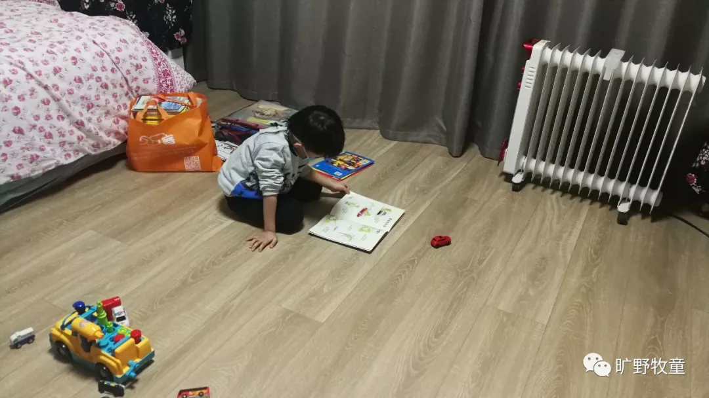
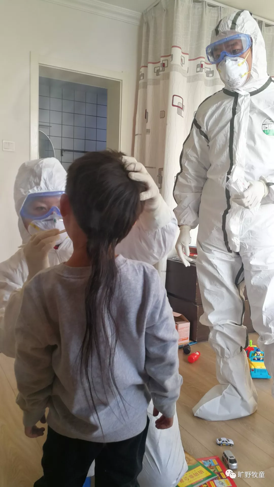
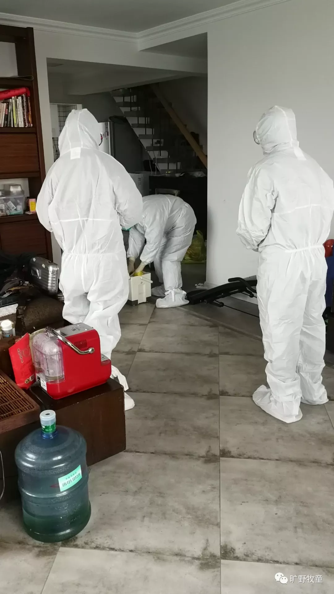

作者： 西部小牧童 旷野牧童
青岛媒体报导，一位叫唐健的市民将仅几面之缘的新型冠状肺炎感染者的5岁孩子接到自己家里照顾；而唐健与孩子素未谋面。4天后这个5岁男孩被确诊为感染者，唐健也因此住进了医院隔离观察。
http://qingdao.iqilu.com/qdgushi/2020/0210/4443271.shtml
媒体报导引爆了当地网络热议，很多人被他爱心感动的时候，也引发了小部分当地小区居民的质疑和担心，媒体引用他的话说：
“我只是想点燃一颗爱的火种”
我突然想起有位叫唐健的弟兄从青岛来成都，我们春节期间要在一起聚的吗？但受疫情影响，他到了成都我们也没聚成。 我立刻将链接发给另一弟兄，得到确认是他：一位主内的弟兄。 我一下子明白过来，他为何甘冒奇险做这样的事。媒体的报导比较含蓄，并没有讲清楚真实原因。 那爱的动力和源头到底是什么呢？
我决定联系唐健弟兄，还原事情的来龙去脉。
以下是我们的访谈：
问：唐健弟兄，请问你是怎样认识这个孩子的呢？
答：我在成都返青岛的路上收到一条代祷信息，一个姊妹和她丈夫感染了，被隔离治疗了，他们有个5岁的孩子没人照顾（这个姊妹两年前在同一个查经小组见过几面）。 发信息的肢体说让我帮忙转发到群里，请大家祷告。
问：一开始只是转发信息，为什么想到要将他领回家呢？
答：在发信息和关注的过程中，知道这个孩子爷爷奶奶姥姥姥爷在外省，如果赶过来有感染的危险，并且年龄也大了不方便；这边疾控中心考虑用120将孩子送过去，但联系当地交通部门时，对方不让入省，只能留在青岛。
由于孩子各项指标正常，医院不能安排留院，并且必须和父母隔离；只能由居住地社区安排一个房间，提供吃住。一个5岁的孩子如果没人管，心理会出大问题的！
当时，我正好看了“父亲被隔离5天后，17岁脑瘫少年死亡”的新闻，觉得太痛心了！
那是别人辛辛苦苦养育了17年的孩子啊，说没就没了。如果孩子得到照顾，是不是能避免这个悲剧？
耶稣说了，要尽心尽意爱神，又说要爱邻舍如同自己。谁是我的邻舍呢？不就是这样有需要者吗？
没有人将这个孩子带去照顾，我就照着心里的感动，提出了帮助他们照顾孩子的意愿。
问：从你有这个想法到实施，经历了什么？
答：孩子的父母经过反复考虑，和我通电话沟通，认同了；
市、区疾控中心开会商讨，详细了解了我的情况，得知我家里目前只有我一个人居住，也同意了这个方案（由我照顾）；
后来街道和社区也很给力，说那你就别出门了，所有的生活物资我们给你送上门。
就这样孩子在30号晚上住到了我家，他已经好几天没洗澡了，我给他洗了个澡，衣服还是社区给买了送过来的（很感谢他们）。

问：你害怕吗？在做这个决策的过程中，有没有犹豫呢？
答：之前也有担心的，见到孩子以后我就没有担心，只有爱和怜悯，怜悯这个孩子，我相信爱里没有惧怕。我相信是神给我感动，我就坦然地去做了。 再者，我是一个父亲，我的孩子不在身边，我觉得也有作为父亲的天性吧。
问：医院提供了哪些支持呢？
答：疾控中心每天两次派人来检查和测量体温，观察孩子的情况；

问：所以你并不是盲目地奉献爱心，仍然有足够的防护和专业支撑；是吗？
答：是的，医院给了我专业的指导，照顾、防护措施等，甚至对我家里进行消毒处理；从街道社区到小区物业这一块都有协调和安排，考虑得都很到位。
问：照顾4天后，孩子确诊被感染，当时的经过是怎样？
答：孩子是2月4号确诊的，他们提取了化验样品去医院检测；当时是凌晨的时候，疾控中心打来电话说，测试结果已确诊，要赶紧送医院；
我问：孩子现目前体温正常，没有其他症状，孩子已睡着了，让他睡到天亮，可以明天早上再去医院吗？医生说可以。
问：你接到电话的心路历程是怎样的？当孩子确诊后你不害怕吗，那个晚上怎样渡过的？
答：我没有恐慌，只是一种对孩子的怜悯，相信孩子会好起来的，心里充满平安；当时我还给他测了体温是正常的。
半夜三点的时候我起来去观察一下孩子盖好被子没有，又量了体温正常；
早上6点我有参加一个网上的灵修；早上起来又观察了一下，然后灵修完，做了早饭之后，叫孩子一起吃了早餐。
然后疾控中心来了两辆救护车和一队人，我和孩子分别各上了一辆救护车，疾控中心的人帮我把屋子消毒。
就这样，我们一起住进了医院。
孩子回到了母亲身边，一起住院治疗。

我个人那时候没有恐惧，只有对孩子的牵挂。
在医院里观察的几天，我就一直保持着一种乐观的心态。
顿了顿，他接着说：
照以前的我，不会去做这么有风险的事情。
但耶稣说过，天父所做过的事，儿子也照样做。
我也一样，耶稣做了的，我也就照样做。
问：据我了解你应该经历了很多艰难，在事业上、经济上和家庭方面，你目前自己还在难处中，为何会帮他们呢？
答：你这问题问到了我的心坎上（他哽咽着回应）
我2012年年底信主，家庭、婚姻经历了很多的难处（笔者略去具体），直到15年人生走到尽头时，才真正开始依靠主。
当我开始认真研读神的话语的时候，才明白我今天的情况就像雅各书中所说的：
“但各人受试探，是被自己的私欲牵引诱惑的”；
此后，心里就开始踏实了，才开始认真追求主，神不离不弃，一直保守看顾了我。
我生意失败，倾家荡产，面临极大的压力；确实很难很难。家庭也面临很多的需要。因着我的过错，造成了家庭很多的患难。我都这么窘迫，怎样伸出援手呢？
我应该想方设法，在商业上去突破，要供应家人需要以及处理债务，我都已经5个月没交社保了。（讲着讲着他哭了）
有一段圣经的经文对我触动特别大：
大卫和跟随他的人外出，亚玛利人攻破城池将所有人的妻儿掳去，也包括大卫的妻子，随从们非常焦急，甚至要拿石头将大卫打死。大卫问神，能不能去追赶？神说能追。于是他带着400人去追赶，在野外遇到了一个倒地将死的少年。大卫却停下来救活了这个少年人。
我当时想，如果我是大卫就留两个兵照顾他，我得带人去追啊，有600个家庭的妻儿老小被抓了啊！这个时候你要不要停下来去帮助他呢？然而大卫停下来了，救了那个少年人，结果那个少年醒来后告诉了大卫，敌人朝哪跑了，并且带他们去追，将妻儿夺了回来。（参考撒母耳记上30章）
问：理解你的这种状况和争扎，所以你还是选择去做了。
答：大卫的选择很感动我，他所面对的困难这么大，几乎要被自己的人打死啊，这样又大又难的事出现，但他却愿意顶着压力去救这样一个少年，他当时并不知道结果会如何啊。
问：神不一定因为我们做一件合他心意的事就挪去我们的难处，你怎么看呢？
答：是的，我知道，这不是交换，我目前仍然处在很大的困难中。但爱人如已是耶稣的教导。
我的手若还有行善的力量，就尽力去行。
问：是的，不是交换。也许神仍然没有挪走我们自己的难处，但我们却越来越刚强，那些困难、风浪渐渐不能动摇我们；风浪可能还是那么大，但它已经摇动不了我们了。
答：是的，爱主，照他心意去行就好。
问：家人如何看待这件事呢？
答：我之前没有告诉我母亲和妹妹（因为母亲年事已高，怕她们会担心），直到前两天才知道；
孩子们早知道了，因为天天和他们视频；
孩子们一开始很惊讶，但体谅和支持，两个孩子和妈妈也一直为我祷告。
问：你现在已经出院，住在党校隔离区，仍然在观察期，也就是说仍然有发病的可能，如果发病了，你后悔吗？
答：不后悔，出于神的都有神的美意。如果主不允许，我不会有任何问题；如果主允许，我能够坦然接受。
访谈感言：
我还没有见过唐健弟兄，原本我们要一起团契聚会，因疫情原因没聚成。
但在春节前几天的一个弟兄们的聚会上，有两位弟兄分享他们的见证，谈到唐健弟兄对他生命的帮助，让我印象深刻。
我陆续知道他的情况，清楚他所面对的困境。看到他的生命在真实被神塑造着、更新着。
从唐健弟兄发给我的截图来看：
小男孩的父亲还不信主，但他被主爱深深感动着；
小男孩的母亲过去常常软弱，但她的心也因此事被挑旺起来，充满了信心和盼望；
疾控中心的人发信息说：“我们都在祈祷你千万别感染，因为像你这样的好人太难得了。”
对于唐健弟兄而言，一开始只是转发一个代祷信息而已，但主耶稣一步步引领他，给他感动和负担。
就这样照顾了这个孩子，尽管过程跌宕起伏，自己也被牵连隔离，但从他的话语中看不到一丝后悔。
甚至他还在小区业主的群里，就邻居恐慌的事情，专门发一封道歉信给大家，让很多争议的声音平息了下来。
他说：“当我坦然面对的时候，神就是这么信实，神光照我的心，也光照邻舍的心，给我们带来谅解和包容”。
我们不需要去“拯救地球”
但我们可以关心身边的邻舍
面对这次席卷全国的冠状肺炎疫情，没有人能够置身事外；
盼望弟兄姊妹们被神的爱充满，因为爱里没有惧怕；
当我们不再惧怕，我们就能将爱带给邻舍；
我们的爱也能驱走他们心中的惧怕，平安福音的种子将播撒在瘟疫肆虐之处。
唐健弟兄并不是“英雄”，他只是一个愿意践行信仰的基督徒，他自身有诸多事务缠身，生活中遇到了很多挑战，但看到他人的需要愿意尽上自己的一些力量。只因为耶稣曾说：
“你要尽心、尽性、尽力、尽意爱主你的神，又要爱邻舍如同自己”。
（路加福音10章27节）
如果不知道结局，只看过程，是什么使大卫不顾生命，宁愿放下这么大的事，去救一个微不足道的埃及少年呢？
如果唐健弟兄被感染了，病危了呢？如果邻居们像那部电影《危楼愚夫》里的居民一样对待他呢？
“我们这至暂至轻的苦楚，要为我们成就极重无比、永远的荣耀”
（歌林多后书4章17节）
相信在这次面对疫情的过程中，还有许许多多像唐健一样的另类逆行者们的温暖故事 ，他们有的被挖掘出来，有的尽管不为人知，但仍然在默默地行动着，只因为他们相信：
神爱世人，甚至将他的独生子赐给他们，叫一切信他的，不至灭亡，反得永生。
（约翰福音3章16节）
我们爱，因为神先爱了我们。
（约翰一书4章19节）
愿这份从天而来的爱、盼望、信心和平安临到每一位读者。
占用您一秒钟的时间，请转发给你身边的人，让我们用爱战胜惧怕、用信心驱走乌云。
瘟疫的阴霾终将散去，爱的光芒将普照神州。